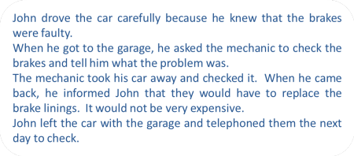

The essential grammar of the sentence
 |
| Wheels within wheels |
If you have never studied the grammar of English, you may like to try
some other guides on this site which are linked in the list at the
end. Click here if you would like to go
there now and then click -back-
to return.
The guides are to a simple Grammar of English which is designed for learners of
English, a 10-unit language analysis course which will lead you through the
basics of phonology, morphology, lexis, tenses, aspect, phrases, clauses, sentences
and text structures and a short grammar guide intended for people taking or preparing to
take an initial teaching qualification such as CELTA.
This guide is concerned with the sentence which, sooner or later, forms the basis of most classroom analysis.
The term grammar describes the whole system of a language and
includes two important areas: syntax and
morphology. In some analyses, it also
includes pronunciation but that deserves a section to itself.
We'll take them one at a time but before we do that, we need to
pause to answer a deceptively simple question:
What are the elements that make up a sentence?
and we'll do that first.
 |
Words and phrases |
You may have decided that you already know the answer to our question:
Words make up sentences.
and you'd be right, of course, but before we can make a
well-formed sentence, we need to define what we mean by 'words' and
then classify them somehow. It is, in fact, quite difficult to
say what a word actually is, but for our purposes, we'll just say
that it is a group of characters, normally written with a space at
each end which we can find in a dictionary and to which we can
ascribe a meaning. That's actually a rather poor definition
but it'll do for our purposes here. There is a separate guide
on this site to word class to which you should refer for a bit more
detail. That's linked in the list of guides at the end.
For now, we'll assume that you know the names of some of the main
word classes.
There are, by some estimates, around 170, 000 words in English so we need some way to make
sense of all that information.
There are three ways we can do our classification:
- Meaning
We can look at meaning and say, for example:- Nouns are labels for things
- Verbs refer to actions
- Adjectives refer to the property of a thing or person
- Adverbs tell us where, when, how often and how actions are done
and those definitions all refer to what a word means. This
sort of classification will work well in many cases and we can put
the following into word classes from the rules we have given:
apple, sugar, go, away,
yellow, dig, flower, frequently, speak, happily, big, unbelievable
Do that now and/or click
 to reveal an answer.
to reveal an answer.
| Nouns | apple, sugar, flower |
| Verbs | go, dig, speak |
| Adjectives | yellow, big, unbelievable |
| Adverbs | away, frequently, happily |
If you had trouble doing that, you really should refer to the
guide to word class linked below because the following will be hard
to understand otherwise.
This focus on meaning works well until we come across, for example:
- happiness is a noun but not a label for a thing
- like is a verb but does not refer to an action
- unhappiness describes a property of a person but is not an adjective
- yesterday describes when an action took place but is not an adverb
The other problem with relying on meaning to identify word class
is that some words have no apparent meaning. For example, it
is difficult to define the words:
on, by,
and, if, this, the, an, it, they etc.
without referring to what they do because, standing alone, they mean
nothing.
- Form
We can look at the shape of a word and classify it by that so we get, for example:- Nouns take a plural in -s
- Verbs take a past tense in -ed or -d or by changing the vowel and take an -s ending when they are used with he, she or it
- Adjectives can be made comparative or superlative by adding -er or -est to the end or by using the words more and most before them
- Adverbs end in -ly
and from those rules, we can classify the following words:
bucket, come, decide, greatly, sad, window, table, rarely, pretty,
throw, marvellous, uncomfortably
Do that now or click
 to reveal an answer.
to reveal an answer.
| Nouns | bucket (s), window (s), table (s) |
| Verbs | come (came), decide (decided), throw (threw) |
| Adjectives | sad (sadder, saddest), pretty (prettier, prettiest), marvellous (more marvellous, most marvellous) |
| Adverbs | greatly, rarely, uncomfortably |
so the system works well until we encounter, for example:
- sheep which is a noun which takes no plural (but has one) and information is a noun which has no plural
- must is a verb which cannot change for the past tense and does not take an -s for the third person and so is going
- likely is an adjective which ends in -ly and absent is an adjective which does not make comparative and superlative forms at all
- often is an adverb which does not end in -ly and so are seldom and out
The same problem also occurs with the effort to identify the
class of a word by its form that we encountered with meaning above.
We noted there that words like:
on, by,
and, if, this, the, an, it, they etc.
do not have any identifiable meaning as such and it is also the case
that no elements of the forms of these words allow us to identify
their word class.
- Grammatical function

This is the key idea. We can classify words not by what they mean or by what they look like (their form) but by what they do. This gives us:- Nouns operate as the subject or object of verbs so they
fill the gap in sentences such as:
The __________ broke
John broke the __________ - Verbs fill the gaps in sentences such as:
John __________ to Mary
The car __________ down on the motorway - Adjectives fill the gaps in sentences such as:
The very __________ girl in the corner
She seemed a little __________ - Adverbs fill the gaps in sentences such as:
She came very __________
How __________ do you see your brother?
- Nouns operate as the subject or object of verbs so they
fill the gap in sentences such as:
and, if you look at all the examples we have given above, you will find that we can classify them all this way, regardless of what they mean and regardless of their form.
Furthermore, above, we recognised that meaning and form are
unhelpful in identifying the word class of items such as:
on, by,
and, if, this, the, an, it, they etc.
without referring to what they do.
Naturally enough, however, a focus on grammatical function does
allow us to classify these items accurately because we can employ
the same gap-filling technique. So, for example, we know:
- There is a group of words which can fill the gap in:
Mary came late __________ her train was delayed
and these we call conjunctions which function to connect clauses and other items as in, e.g.:
Both Mary __________ her brother arrived - Another group, determiners, will fill the gaps in:
Please pass me __________ hammer
Would you like __________ tea?
etc. and function to identify or limit the noun. - A further group, prepositions will serve to link ideas and
fill the gaps in:
She walked __________ the bridge and __________ the park - A final group will stand in for nouns (which we have already
identified and serve to fill the gaps in:
Mary and her brother came to the party but __________ left early and __________ stayed till the end
although we do not know, of course whether we should put he or she into each gap. That doesn't matter because we are interested in word class, not the meaning of the whole sentence.
If you want to take a short matching test to see if you can apply this sort of word-class-identification process to some sentence gaps, click here.
What we have done here is refer to syntax as a way of classifying what words do. That's simple enough but what happens when we encounter a sentence like this?
My dear old mother quite recently came across some really ancient photographs.
because here we have some groups of words acting grammatically
rather than single words written with a space at each end. Can
you identify them?
Do that now or click
 to reveal an answer.
to reveal an answer.
| Noun phrases | my dear mother, some really ancient photographs |
| Verb phrase | came across |
| Adjective phrases | dear old, really ancient |
| Adverb phrase | quite recently, really |
The answer is that, as you can see for the purposes of understanding sentences, a group or words or a single word are performing exactly the same functions in the syntax of the sentence so we could express that sentence as:
Mother found photographs.
which retains the meaning and has the same structure.
Whether a grammatical function is performed by a single word or a
group of words, we refer to them in the same way and call them noun,
verb, adjective and adverb phrases.
Now we can get on and analyse sentences in English. In what follows we will refer to some different word classes but that really doesn't matter because we have already identified the four main meaning-carrying word classes in this section: nouns, verbs, adjectives and adverbs.
SyntaxHow words work together to make well-formed, meaningful utterances. |
As our example for this we'll take a simple sentence in English:
|
This man wants some coffee |
We can break this sentence down into its three main parts and look at each
one separately. Each of those parts can also be broken
down, like this:

This is called parsing a
sentence. Later in this guide, you'll learn how to do
it for yourself. For now, we'll just explain a little:
The three main parts are:
- This man:
this is the subject of the sentence and its theme (what it concerns). It is a noun phrase made up of two parts, man (a common noun) and this (a demonstrative determiner which tells us which man and limits the noun). - wants:
this is the verb which tells us what the subject is doing. In this case, it's a single word but can be a phrase such as would like. The verb type is mentioned, transitive, so we know that it takes an object. The ending on the verb, -s, tells us that it is singular and that the subject is the third person (he, she, it). - some coffee:
this is the object of the verb wants and tells us what the verb refers to. It is a noun phrase made up of two parts, coffee (a common mass noun) and some (a quantifying determiner which tells us how much and limits the noun).
Each main part can be broken into two smaller parts (in this example):
- This:
is a determiner and tells us something about the man (in this case that it is a particular, single man near to the speaker). It could be a range of other determiners such as her (showing a relationship), that (showing that he is further away from the speaker), the (showing that it is a man both the speaker and listener are aware of) and so on. - man:
is a common singular count noun (with an irregular plural, men). Because both speaker and hearer are operating in English, the meaning is clear – an adult male human. - want:
is the base form of the verb. This verb always takes an object (is transitive) because if we say:
I want
no meaning is extractable unless I say what it is I want. - -s:
comes at the end because in English, this is how we change, or inflect, the verb to show a singular third-person form. - some:
is another determiner, called a quantifier and tells us how much. It could be a range of other quantifiers such as two (but we'll change the noun to a plural form), lots of, a cup of and so on. - coffee:
is a mass noun which usually has no plural but can in this case because it is used to stand for a cup of coffee. Usually, we don't say coffees in the same way that we don't say furnitures or informations and so on because the noun is considered uncountable in English.
 |
Subjects, Verbs, Objects and ComplementsIn the English sentences:
we only know who did what to whom by the order of the words. |
The subject comes first in both sentences so we know that is the doer of the action. The object follows the verb so we know that is the receiver of the action. If we reverse the order, we reverse the sense.
| In sentence 1 | the man is the subject of the verb kiss | the woman is the object of the verb |
| In sentence 2 | the woman is the subject of the verb kiss | the man is the object of the verb |
Usually, of course, we can understand what is the subject and what is the object of a verb by the meaning of the sentence:
- Peter drank the water
Cannot (sensibly) be changed to:
- The water drank Peter
However, in English, there are many times when the word order alone gives the sense of what or who is the subject and what or whom is the object. For example:
- The delay caused the problem
- The problem caused the delay
In some languages, the words in the noun phrase will have a change of form depending on whether they are part of the subject or the object so it matters a lot less what the ordering is. In others, the verb itself may change depending on which word is the subject and which the object. So, for example, sentences 5. and 6. translate this way:
In Greek (with different forms of the article):
- Η καθυστέρηση προκάλεσε το πρόβλημα (I kathystérisi prokálese to próvlima)
- Το πρόβλημα προκάλεσε την καθυστέρηση (To próvlima prokálese tin kathystérisi)
In Czech (with different forms of the verb):
- Zpoždění způsobilo problém
- Problém způsobil zpoždění
In Basque (with many alterations to determiners and verbs):
- Atzerapenak eragin du arazoa
- Arazoak atzerapena eragin zuen
In Russian (with changes to the endings on the nouns):
- Задержка вызвала проблему (Zaderzhka vyzvala problemu)
- Проблема вызвала задержку (Problema vyzvala zaderzhku)
That won't work in English so getting word ordering right is very important.
Here's a little test.
Identify the subjects and the objects of the verbs in this story and
then click on the story for the answers.
|  |
|
In the example above, the subjects, verbs and objects are quite simple
but they can be more complicated.
For example, in this sentence:
The old fisherman with the blue hat
slowly rowed his ancient
wooden boat which he cared for carefully into the middle
of the river.
we still have:
- the subject noun phrase:
The old fisherman with the blue hat - the verb phrase:
slowly rowed
Strictly speaking, verb phrases contain only verbs and this is a verb phrase plus a modifying adverb. - the object noun phrase:
his ancient wooden boat which he cared for carefully - the prepositional phrase
into the middle of the river
Because the elements of the sentence are groups of words rather than individual items, it makes sense to refer to them as phrases: the subject noun phrase, the verb phrase, the object noun phrase and the prepositional phrase.
In this analysis and in what follows we are taking a small liberty by calling slowly rowed the verb phrase. It is, in fact, an adverb and the modified verb. A verb phrase proper contains only verbs such as rowed, has rowed, will row, may have been rowing etc.
In grammar books, you will often see the term nominative
(case) to refer to the subject and accusative (case)
to refer to the object. Most learners of English don't
need to understand these terms (but you do).
We have now identified two of the three cases in
English (the third is the possessive or genitive which does not concern
us here).
 |
Adverbials and complements |
|
He was walking alone in the country last week |
Now that we can identify the subject, the verb and the object, we can look at the final bits of the sentences we have used so far. These are the adverbials or complements and they come in different guises.
- Complements
- The term complement is rather slippery because it is defined
in many ways depending on the nature of the grammar you are
reading. In this guide, we will use the term in a narrow
sense and distinguish it from the subject or object of a verb.
It is the part of the sentence which allows us to make sense of
the subject and the verb. For example, in:
She is the boss
it is clear that we need to have the boss to make sense of the sentence at all but it is not the object of the verb. It is, in fact another way of saying the subject: she and the boss refer to the same person.
In:
Mary seems unhappy
we have a different type of complement (called an attribute) which tells us about the subject of the verb but which is still not acting as the object of it: it's an adjective complement. - Adverbials
- Adverbials do not tell us about the subject of the verb,
they add information to the verb itself and they come in a
variety of forms. For example, in:
He arrived immediately
we have a simple adverb, immediately, acting as the adverbial and telling us about how he arrived. And in:
He arrived yesterday
we have a noun, yesterday, acting as an adverbial, telling us when he arrived. In:
He arrived by bus
we have a prepositional phrase, by bus, acting as an adverbial, telling us how he travelled.
Any item which modifies how we see the verb phrase is an adverbial.
Here are some more examples with the adverbial or complement in black:
- He rowed into the middle of the lake
is a prepositional phrase adverbial because it tells us where he rowed - The boat was very expensive
is an adjective phrase complement because it tells us about a noun or pronoun, in this case it tells us about the subject - The hot weather made me
tired
is an adjective phrase complement which refers to the object of the verb (me). - He was walking alone
is an adverbial phrase (and an adverb) because it tells us how he walked - He walked back
the is an adverbial phrase (and another adverb) telling us in which direction he walked (and prepositional phrases such as towards the house can do that too) - He was walking in the country
is another prepositional phrase adverbial because it tells us where he walked - He was walking last week
is another adverbial noun phrase because it tells us when he walked (and prepositional phrases such as in the morning can do that too)
As we noted above, here we have a narrow definition of the term complement. In some grammars everything except the verb phrase itself may be referred to as a complement. In others, all adverbials are classified as complements and in yet others everything except the subject and the verb is analysed as a complement.
 |
MorphologyHow we build words and change them grammatically. |
We make two kinds of changes to words in English:
- We change words to make different forms of the same idea.
For example:
- we can derive the word unwell from the word well (reversing its meaning) by adding un- to the beginning.
- we can derive the word hopeful from the noun hope, making it an adjective by adding -ful to the end.
- We change words to conform with the grammar of what we mean.
This is called inflecting and the
parts we add or change are called
inflexions (or inflections). For example:
- In the sentence, This man wants some coffee, we add an -s to the verb because singular subjects require that change to the verb in English.
- We can add -ed to the verb and then we have a past tense: This man wanted some coffee.
If we have more than one man and more than one thing as an object, as in, e.g., These men want some biscuits, we make other changes:
- this changes to these [this is a determiner: it tells us how many or which]
- man changes to men, an irregular plural. Usually in English, we make plurals by adding -s or -es to the noun as we do with biscuits.
- want takes no -s because plural nouns do not demand a change to the base form of the verb (as they do in most languages, by the way). This is called a zero inflexion or an uninflected form.
- the determiner some stays the same because it can be used for nouns we count and those we don't. Other quantifiers are not so versatile so we can say a few biscuits but not *a little biscuits. (The '*' is the conventional way in analysing language to show that an example is not well formed or accurate.)
|
|
Task 1:
Look again at the sections above and focus on the words
in
red. They are all terms we use when we are describing grammar. Click here to test yourself to see if you can remember what the words mean. |
 |
Tree diagrams |
Tree diagrams are a traditional way of illustrating the structure of a sentence (syntax, in other words) and they can get quite complicated. Here we will deal with fairly straightforward examples.
We can now add a row to our diagram for parsing the sentence
above and identify the various classes of words and phrases.
Like this:

 |
Task 2:
Look again at how we parsed this
sentence using a tree diagram and try parsing this sentence: The driver kindly delivered the car to my door Click here when you have written your answer. |
This is how it should look.

What we have done is:
- In the first two rows we have identified:
- the subject (the driver)
- the modified verb
phrase (kindly + deliver + -ed)
but note what was said above about what really constitutes a verb phrase, properly defined. - the object (the car)
- a prepositional phrase adverbial (to my door)
- In the bottom two rows, we have then:
- broken down the subject into:
- the determiner (the definite article the)
- a singular common noun (driver)
- broken the verb phrase into:
- an adverb (kindly)
- the verb (deliver)
- its past-tense marker (-ed)
- broken down the object into:
- the definite article (the)
- a singular common noun (car)
- broken down the prepositional phrase into:
- the preposition (to)
- the preposition's noun-phrase complement also called an object in some analyses (my door)
- broken down that noun phrase into:
- a possessive determiner (my)
- a common singular noun (door)
- broken down the subject into:
 |
So what? |
So quite a lot. Three important things, in fact:
- In order to be able to make grammatically correct sentences in any language, it is important to recognise how they are constructed. To be able to help people to do that, you need to know how to describe and explain the language. Now, for simple sentences at least, you can.
- To construct any sentence you have to know where things go. In English we usually put the subject first, then the verb and then the object. We also put the adverb before the verb in many (not all) cases (kindly delivered, not delivered kindly). We also say a beautiful house, not a house beautiful and three cars not cars three. Different languages handle this sort of thing differently.
- The other thing you need to know is how words in the
language change or inflect:
- To make present tenses (so we can distinguish between they make and he makes, and between we are going and I am going)
- To make past tenses so we can distinguish between I come and I came, she smokes and she was smoking)
- To make future reference (so we can say things like I will go, I am going to go and I am leaving tomorrow)
- To make plurals (so we can produce the match-the matches, the car-the cars, the mouse-the mice and so on)
- To make other words so we can form kindly from kind
- To insert the right determiner (so we can distinguish between a car, the car, my car and some cars)
- To use prepositions (so we can distinguish between to my house, on my house, from my house, next to my house) etc.
 |
Some practice for you |
|
|
Task 3:
In this table, try to parse
the sentences on the left, identifying all the parts and how
the words change. Click on the All the guides open in an new tab so simply shut them to return to this page. OK? |
| He bought some
fresh apples in the market |
 |
| They were
going to open the parcel and look inside |
 |
| I had a
spare hour so I read the newspaper |
 Notice that you cannot reverse the clauses without changing the meaning to nonsense (I read the newspaper so I had an hour to spare). |
| She wants to
come to the movie with you |
 |
| I hate making
mistakes |
 |
| They must go
now |
 |
| When I came,
he left |
 Notice that it is possible to reverse the clauses (He left when I came) but that the conjunction, when, moves with its clause. |
| The window was
broken by the children |
 This is called a passive-voice sentence because the object has been raised to the subject position. |
| Grammatical
accuracy is often useful |
 |
It does not matter much whether your analyses of all the sentences is identical to the suggestions above because people will vary in how this is done. Providing you have identified the key components of each sentence, that's OK.
Some notes
- He bought some fresh apples in
the market
This is very like the second example in this page. We have a typical Subject - Verb - Object pattern (most sentences in English follow that).- some is a determiner which we can put before a plural noun or a noun which describes a mass (like, sugar, information etc.)
- fresh is an adjective in the usual place (before the noun it modifies)
- in the market is a simple prepositional phrase. Prepositions are often followed by noun phrases. In fact they serve to link the noun phrase to the verb phrase.
- They were going to open the
parcel and look inside
This is an unusual tense form. It's called the future in the past. They are going to is the present intention for the future but They were going to refers to a past intention (that didn't happen, usually).- going to is usually used to talk about intentions and it's followed by the simplest form of the verb, the infinitive
- look is a verb here and it is followed by an adverb (inside) telling us where.
- I had a spare hour so I
read the newspaper
This is called a compound sentence because it consists of two potentially independent clauses.- There are two parts:
I had a spare hour (the first clause)
so I read the newspaper (the second clause) - The two clauses are said to be coordinated by the conjunction
so.
Often, we can reverse the clauses and retain the meaning.
In this case, we can't however, because so is used to
link cause and effect logically.
*So I had a spare hour, I read the newspaper
is nonsense.
- There are two parts:
- She wants to come to the movie
with you and
I hate making mistakes- Both of these sentences contain two verbs: want and come and hate and make.
- The difference is that some verbs in English are followed by the
verb with -ing (often called a gerund)
and some by the verb with to before it (called the
to-infinitive).
Verb forms ending in -ing or formed with to plus the verb are called non-finite because they do not show tense or person. They are unchanging. - In the first sentence we have analysed the whole clause to come to the movie with you as the object of the verb. What we have is a clause acting as a noun phrase and we refer to it as a nominalised clause. We could also analyse the second example with making mistakes in the same way and refer to the clause as nominalised.
- They must go now
must is an example of a special kind of verb called a modal auxiliary verb. Modal auxiliary verbs are auxiliaries and do not usually stand alone. For example,
I can
means very little unless we know the context but
I can swim
carries meaning even with no context. - When I came, he left
This is not a simpler version of 3. above. It is an example of subordination, not coordination.
We have two clauses:- The main clause:
he left - The subordinate clause:
when I came
The first clause (b.) tells us about his leaving and cannot stand alone and retain its full meaning.
- The main clause:
- The window was broken by the
children
This is called a passive because we can leave out by the children and it still makes sense. We are focused on the object of the verb break and we may not know (or care) who broke it. Technically, the window is the patient (i.e., the thing the event happened to) and the children is the agent (i.e., the thing or person who did the action). - Grammatical accuracy is often
useful
This is an example of one way English makes subjects of verbs bigger and more complete. We simply add an adjective before the noun. In this case, it is a special form of adjective called a classifier: it tells what sort of thing, rather than describing it. There are other ways to modify nouns.
In this sentence we also have special kind of verb which does not take an object, it links the subject to the attribute, in this case, linking the noun phrase grammatical accuracy to the adjective, useful.
It is called a copular verb and other verbs such as appear, become, grow and many more work in the same way.
|
|
Task
4:
Look again at the notes above and focus on the words
in
red. They are 10 more terms we use when we are describing grammar. Click here to test yourself to see if you can remember what the words mean. |
 |
More help |
Of course, this short guide can't possibly cover more than a
little of this huge subject but it has introduced you to some very
important terms and concepts. This site contains lots of
grammar guides and the most useful ones for you will be listed in
the initial plus index.
You can go there for much more detail but don't try to do it all at
once. Do what interests you or what is urgent at the moment
(because you are teaching it tomorrow!).
For more about the issues covered above, try:
-back-
| Related guides | |
| tenses map | this will give you a run-down of the forms and names of the tenses of verbs in English |
| the tenses index | this page contains links to all guides in this area |
| verbs essentials | this will tell you about the three main types of verb in English and what they do |
| the sentence | this explains and gives examples of the four main sentence forms in English |
| syntax | this is a much more advanced guide to the essentials of syntax: what it is and why we should know about it |
| prepositions essentials | find out here about the different sorts of preposition English uses |
| conjunctions | these words join sentences together and are very helpful for making meaning |
| active and passive voice | this structure is difficult for learners, especially those whose languages are operate differently |
| word class essentials | This guide will help you identify what grammatical functions words perform and what we call them |
| The three links to short (and not so short)courses in grammar (new tabs): | |
| Simple Grammar of English | designed for learners of English but that's what you are in this case |
| language analysis course | which will lead you through the basics of phonology, morphology, lexis, tenses, aspect, phrases, clauses, sentences and text structures |
| a short grammar guide | intended for people taking or preparing to take an initial teaching qualification such as CELTA |
 |
Grammar books |
There are lots of good grammar books and, if you are at all serious
about teaching, you'll need one or two.
There are two sorts:
- grammar books intended for learners
These will be easier for you to access and will be enough at the beginning. Good examples are:
Foley, M & Hall, D, 1988, Longman advanced learners' grammar, Harlow: Longman
Swan, M, 2005, Practical English Usage (3rd Ed.), Oxford: Oxford University Press - books intended for more serious study and for use by
teachers
These are the places to go for the inside story but they are more difficult. Good examples are:
Leech, G and Svartvik J, 3rd edition, 2003, A Communicative Grammar of English, Harlow: Longman
Lock, G, 1996, Functional English Grammar, Cambridge: Cambridge University Press
Parrott, M, 2010, Grammar for English Language Teachers (2nd Ed.), Cambridge: Cambridge University Press
Thornbury, S, 2004, Natural Grammar, Oxford: Oxford University Press
 |
Web resources |
You have already found a good one.
There are lots of websites intended to help people understand
aspects of English grammar. Many are wrong, many just lists of
interesting (or otherwise) facts and some are plain confusing.
Beware sites that prescribe by saying That's wrong!, This is
right! and so on. They are often written by people who
have an axe to grind and are rarely reliable.
Make sure you have a decent grammar book as well so you can
cross-check for accuracy.
There are a number of grammar exercises and lessons for learners on this site. Click here to go to them.